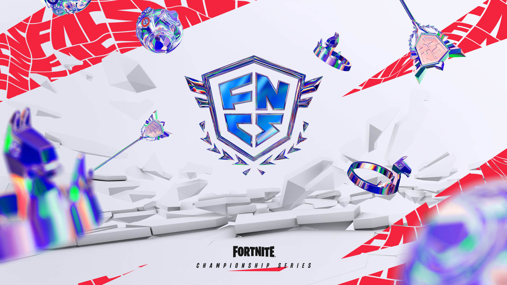
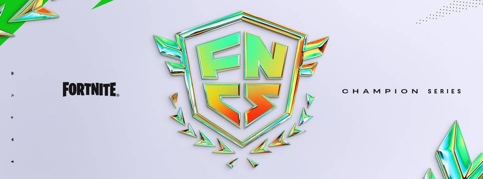

Retornar
KingBr ganha a FNCS 2024 ganhando um premio (US$ 7.675.000)
FNCS é a abreviação para Fortnite Champion Series, um torneio competitivo organizado pela Epic Games,
desenvolvedora do jogo Fortnite. Este campeonato é uma das competições mais prestigiadas dentro da
comunidade de Fortnite e atrai jogadores profissionais de todo o mundo.
A FNCS ocorre em várias temporadas ao longo do ano, cada uma com seu próprio formato e premiações.
Os jogadores competem em partidas online, onde buscam acumular pontos ao longo de várias rodadas.
As equipes com melhor desempenho avançam para as finais, onde disputam por uma parcela do prêmio em
dinheiro e o título de campeões daquela temporada.
Os participantes da FNCS são frequentemente jogadores profissionais, muitos dos quais são contratados por
organizações de esports. Esses competidores dedicam horas de prática e treinamento para aprimorar suas habilidades
e estratégias, visando alcançar o sucesso nas competições.
Além do prestígio e das premiações em dinheiro, a FNCS oferece aos jogadores uma plataforma para mostrar seu
talento e habilidade para uma audiência global. As transmissões ao vivo das partidas atraem milhões de espectadores,
proporcionando entretenimento e inspiração para os fãs do Fortnite em todo o mundo.
Em resumo, a FNCS é um evento competitivo de alto nível que reúne os melhores jogadores de Fortnite para competir
por prêmios em dinheiro e reconhecimento na comunidade de esports.

Além do aspecto competitivo e das premiações em dinheiro, a FNCS também desempenha um papel
crucial na evolução do metagame e das estratégias dentro do Fortnite.
Os jogadores profissionais frequentemente
utilizam esse torneio como uma plataforma para experimentar novas táticas, testar a eficácia de
diferentes armas e itens, e até mesmo influenciar as atualizações futuras do jogo por meio de seu feedback.
A cada temporada da FNCS, os espectadores podem esperar ver uma variedade de estilos de jogo, desde
abordagens agressivas até estratégias mais cautelosas e defensivas. Isso cria uma experiência de
visualização dinâmica e emocionante, à medida que os competidores se adaptam e respondem às mudanças no campo de jogo.
Além disso, a FNCS não se limita apenas aos jogadores profissionais. A Epic Games também oferece
oportunidades para jogadores amadores e semiprofissionais participarem de torneios qualificatórios, nos quais
têm a chance de competir contra os melhores do mundo e talvez até se destacarem.
Em última análise, a FNCS é mais do que apenas uma competição de esports; é uma celebração da comunidade
de Fortnite, reunindo jogadores de todas as habilidades e origens para compartilhar sua paixão pelo jogo.
Essa
conexão entre os jogadores e a Epic Games é essencial para o crescimento contínuo e o sucesso duradouro de Fortnite como
uma das principais forças no cenário dos jogos competitivos.

Feito por michel jackson